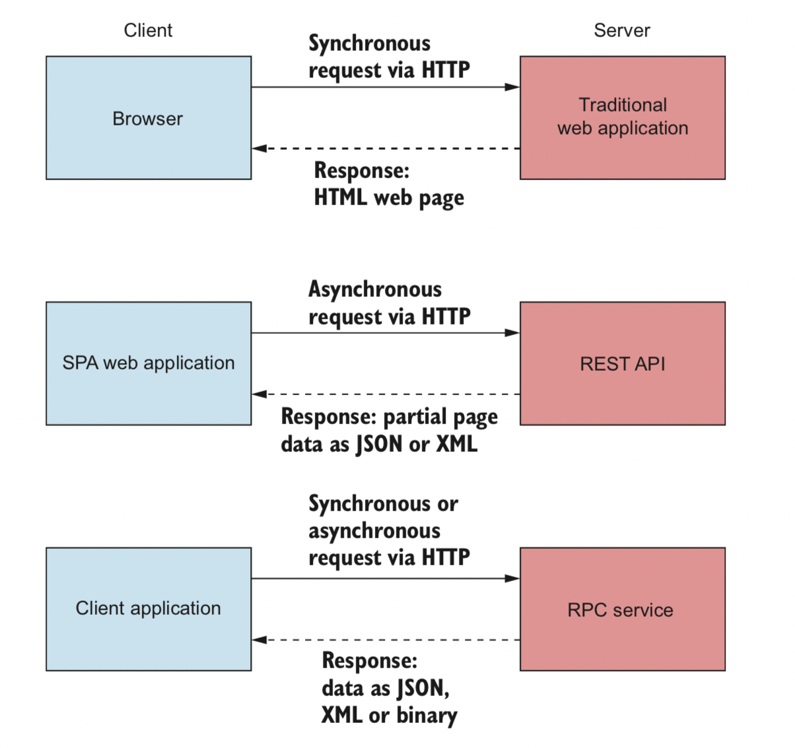

ASP.NET CORE可以作为服务器端应用程序，用于各种不同的应用程序客户端：它可以为传统的Web应用程序提供HTML页面，可以充当客户端SPA应用程序的REST API，或者可以充当客户端应用程序的临时RPC服务。
主要和次要版本的ASP.NET Core框架，为期三年，而且，由于所有开发都是公开进行的，因此有时您可以从一般社区以及直接从Microsoft获得问题的答案。在决定是否使用ASP.NET Core时，需要考虑两个主要方面：是否已经是.NET开发人员，以及是否要创建新的应用程序或希望转换现有的应用程序。